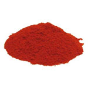
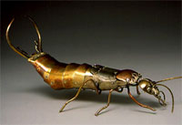
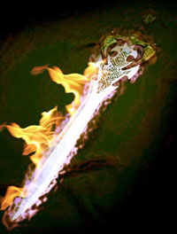
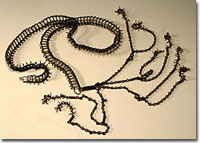
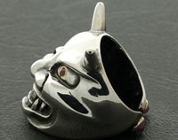
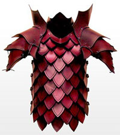
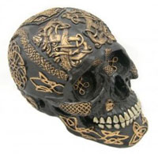
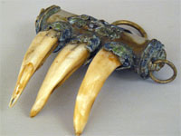

I chierici di Azatar possono consacrare determinati oggetti al fine di conferire loro un incantamento sacro minore.

| OGGETTO | Pergamena di Azatar |
| ORIGINE | DIVINA - Divinità Azatar - Forze Oscure |
| POTENZA | Least Minor Enchantment (75 xp, 150 gp) |
| SCUOLA DI MAGIA | ENCHANTMENT |
|
DESCRIZIONE
|
Può
essere incantata con questo incantamento minore ogni pergamena non magica.
Attraverso l'utilizzo di questo incantamento
la pergamena diventerà
capace di contenere unicamente incantesimi clericali della divinità del
sacerdote che ha incantato l'oggetto, divenendo il supporto
necessario per la creazione delle pergamene magiche clericali.
Oltre ai comuni modificatori applicabili a tutti gli incantamenti
minori, chi possiede la competenza Papermaking e la utilizza
nella produzione di questo minor enchantment riceve i seguenti
modificatori nella produzione di questo oggetto: |
| OGGETTO | Dust of Infernal Flame |
| ORIGINE | DIVINA - Divinità Azatar - Forze Oscure |
| POTENZA | Least Minor Enchantment (75 xp, 350 gp) |
| SCUOLA DI MAGIA | EVOCATION |
|
DESCRIZIONE  |
Questa polvere magica (link) di colore rosso fuoco è in grado di evocare nell'area in cui è sparsa fiamme provenienti dal piano elementale interno del fuoco. Orbene, quando questa polvere è utilizzata il materiale evocato produrrà 3d3+1 danni da fuoco magico che le vittime potranno dimezzare superando un tiro salvezza su riflessi. |
| OGGETTO | Insect of Lesser Swarm |
| ORIGINE | DIVINA - Divinità Azatar - Forze Oscure |
| POTENZA | Lesser Minor Enchantment (100 xp, 750 gp) |
| SCUOLA DI MAGIA | CHARM |
|
DESCRIZIONE
 |
Con l'incantamento minore of Lesser Swarm possono essere incantati piccole miniature di insetto (solitamente scarafaggi) costruite in metalli dolci come il rame dal peso pari a 1/2 libbra e dal costo di 15 monete d'oro. Una volta incantato questo oggetto magico può essere attivato con un'azione complessa avente fattore iniziativa pari a quello di una comune azione fisica che non richiede il mantenimento della concentrazione ma l'invocazione orale (componente vocale) del nome di Azatar. All'atto di attivazione l'insetto metallico deve essere posato o lanciato su una qualsiasi superficie solida. Nel luogo dove è posizionato sarà richiamato un tappeto di grossi insetti terrestri voraci che si diffonderà sulla superficie solide in un area dal diametro di 9 metri centrata sull'insetto. Il tappeto di insetti resterà nell'area per 5 round. Orbene tutte le creature che alla fine di ogni round di durata si troveranno all'interno dell'area a contato con gli insetti subiranno 1d6 danni da lacerazione (le creature di dimensione Huge o superiore, nonché quelle non dotate di carne come gli scheletri, gli elementali e molti costruiti, sono immuni agli effetti di questo incantamento). Una volta utilizzato l'insetto incantato questo si sgretolerà definitivamente in polvere. |
| OGGETTO | Weapon of Least Infernal |
| ORIGINE | DIVINA - Divinità Azatar - Forze Oscure |
| POTENZA | Superior Minor Enchantment (250 xp, 1750 gp) |
| SCUOLA DI MAGIA | EVOCATION |
|
DESCRIZIONE  |
Con l'incantamento minore Least Infernal possono essere incantate solo le armi da corpo a corpo di metallo o di acciaio. Un fedele di Azatar che impugna quest'arma può decidere, una volta per ogni flusso di energia divina di Azatar, di invocare il potere della divinità per far circondare l'arma di fiamme infernali. Per attivare il potere basta invocare mentalmente la propria divinità e non è richiesto l'utilizzo di un'intera azione bensì solo di una frazione del round, si considera una free action che impone unicamente una penalità di +3 (+2 se si utilizza un'arma rituale del Culto di Azatar) alla propria iniziativa e che richiede componenti verbali (preghiera ad Azatar) e somatici ma non il mantenimento della concentrazione. L'arma sarà, quindi, coperta dalle fiamme nel round in cui è attivata e nei due successivi round provocando rispettivamente 1d4, 1d6 ed 1d4 danni supplementari da fuoco magico per ogni attacco andato a segno nel relativo round di effetto. L'intensità delle fiamme, infatti, cresce con il passare dei round per poi decrescere nuovamente. Si noti che questo potere può essere utilizzato solo dai fedeli di Azatar, chi non è fedele di questa divinità non potrà in nessun caso attivarlo, inoltre se, per qualsiasi motivo, chi ha attivato il potere smette di impugnare l'arma la stessa perderà immediatamente il potere che era stato attivato. |
| OGGETTO | Belt of Lesser Pain |
| ORIGINE | DIVINA - Divinità Azatar - Forze Oscure |
| POTENZA | Superior Minor Enchantment (250 xp, 2000 gp) |
| SCUOLA DI MAGIA | ABJURATION |
|
DESCRIZIONE
 |
Con l'incantamento minore of the Lesser Pain può essere incantata una particolare cintura metallica piena di spine dal peso di 1/2 libbra e dal costo di 30 monete d'oro. Chi indossa questa cintura spinosa perderà immediatamente un punto ferita. Questo punto ferita non potrà essere curato, rigenerato o recuperato in alcun modo fino a che la cintura è indossata dalla creatura ed nei dieci giorni successivi alla sua rimozione (mettere e togliersi la cintura prima di tale termine non provocherà, però, la perdita di ulteriori punti ferita. Fino a che la cintura è indossata, però, la creatura riceverà costantemente il 33% di immunità a qualsiasi effetto di dolore la stessa sia sottoposta, da qualsiasi origine provenga l'effetto (come abilità, effetti naturali, poteri speciali, incantesimi o incantamenti). |
| OGGETTO | Ring of the Lesser Beast |
| ORIGINE | DIVINA - Divinità Azatar - Forze Oscure |
| POTENZA | Superior Minor Enchantment (250 xp, 2000 gp) |
| SCUOLA DI MAGIA | CHARM |
| CARICHE | 10 |
|
DESCRIZIONE
 |
Con l'incantamento minore of the Lesser Beast può essere incantato solo un anello d'argento raffigurante fattezze bestiali dal valore minimo pari a 50 monete d'oro. Una volta incantato questo oggetto magico minore potrà essere indossato validamente solo dai fedeli di Azatar appartenenti ad una razza umanoide (come Gnoll, Froglar, Minotauri ecc... ecc...). Questo anello può, quindi, essere attivato utilizzando spendendo una carica con un'azione complessa avente fattore iniziativa pari a +3 che richiede l'utilizzo di componenti somatici e vocali (adorazione alla divinità) ma non il mantenimento della concentrazione. Dal round successivo a quello di attivazione, per una durata complessiva pari a 5 round, l'effetto magico dell'anello esalterà il carattere bestiale dell'umanoide che riceverà un bonus di +1 al tiro colpire e di +2 ai danni (bonus che si considerano dovuti alla forza della creatura) ed una penalità di +1 alla Classe Armatura. Se, per qualsiasi motivo, chi ha attivato il potere smette di indossare l'anello l'effetto magico terminerà immediatamente. Per ricaricare l'anello è necessario posizionarlo su un altare attivo di Azatar presso un qualsiasi tempio della divinità e cospargerlo dei necessari ingredienti magici (polvere miscelata di ossa, oro e legno carbonizzato). L'anello dovrà restare sull'altare per 30 giorni ininterrotti e sullo stesso andranno versate 20 monete d'oro di ingredienti magici per ogni carica che si vuole recuperare. Il procedimento di ricarica è sicuro ma se, per qualsiasi motivo, l'anello è rimosso dall'altare prima dello scadere dei 30 giorni il procedimento andrà interamente ripetuto e gli ingredienti dovranno essere riacquistati. A differenza dei comuni oggetti magici a cariche questo anello può esaurire tutte le sue cariche senza perdere permanentemente il suo potere magico. |
| OGGETTO | Armour of Lesser Infernal Tollerance |
| ORIGINE | DIVINA - Divinità Azatar - Forze Oscure |
| POTENZA | Greater Minor Enchantment (375 xp, 3000 gp) |
| SCUOLA DI MAGIA | ABJURATION |
|
DESCRIZIONE  |
Con l'incantamento minore of Lesser Infernal Tollerance può essere incantata qualsiasi armatura. Qualora la corazza sia utilizzata da un fedele di Azatar, costui riceverà fino a che la indossa (completamente) una limitata resistenza magica al fuoco ed al calore. In particolare, costui ridurrà del 33% per eccesso tutti i danni da fuoco o calore subiti, sia che essi derivino da effetti naturali che da effetti magici. L'incantamento, inoltre, garantisce alla corazza (non a chi la indossa) un bonus di +1 a tutti i tiri salvezza contro rottura dovuti al fuoco o al calore. Questi benefici non si cumulano con quelli ottenuti attraverso poteri similari (si pensi al potere Tolleranza Infernale dei chierici di Azatàr) applicandosi unicamente la migliore riduzione del danno od il migliore bonus al tiro salvezza. |
| OGGETTO | Skull of the Flames |
| ORIGINE | DIVINA - Divinità Azatar - Forze Oscure |
| POTENZA | Greater Minor Enchantment (375 xp, 3500 gp) |
| SCUOLA DI MAGIA | ALTERATION |
| CARICHE | 10 |
|
DESCRIZIONE  |
Con l'incantamento minore Skull of the Flames può essere incantato solo un teschio umano in perfette condizioni in precedenza annerito da un procedimento di carbonizzazione e successivamente abbellito con rune rituali in oro puro, dal peso pari a 1,5 libbre e dal valore minimo di 100 monete d'oro. Orbene un teschio così incantato può essere utilizzato da qualsiasi utente di magia o sacerdote sia fedele di Azatar. Costui, in particolare, potrà utilizzare il teschio come se fosse un componente magico materiale supplementare (impugnandolo quindi nel corso del lancio della magia) al fine di potenziare un qualsiasi incantesimo del 1°, 2° o 3° livello di potere provochi danni da fuoco (non, quindi, danni da mero calore). Questa procedura comporta una penalità di +1 al casting time delle magie. Orbene, chi lancia la magia, spendendo una carica, potrà potenziare un qualsiasi incantesimo capace di produrre danno diretto da fuoco facendogli produrre il 25% dei danni totali in più (arrotondando per eccesso). Non potranno essere potenziati incantesimi già amplificati in altro modo, come ad esempio attraverso l'uso della magia Augmentation I (scuola Alteration, terzo livello di potere) od attraverso l'uso del relativo talento del Magister Formulae. Per ricaricare il teschio è necessario posizionarlo su un altare attivo di Azatar presso un qualsiasi tempio della divinità e cospargerlo dei necessari ingredienti magici (polvere miscelata di ossa, oro e legno carbonizzato). Il teschio dovrà restare sull'altare per 30 giorni ininterrotti e sullo stesso andranno versate 35 monete d'oro di ingredienti magici per ogni carica che si vuole recuperare. Il procedimento di ricarica è sicuro ma se, per qualsiasi motivo, il teschio è rimosso dall'altare prima dello scadere dei 30 giorni il procedimento andrà interamente ripetuto e gli ingredienti dovranno essere riacquistati. A differenza dei comuni oggetti magici a cariche questo teschio può esaurire tutte le sue cariche senza perdere permanentemente il suo potere magico. |
| OGGETTO | Amulet of Lesser Devourer |
| ORIGINE | DIVINA - Divinità Azatar - Forze Oscure |
| POTENZA | Greater Minor Enchantment (375 xp, 3500 g.p.) |
|
DESCRIZIONE
 |
Questo amuleto magico minore (cfr. le regole generali per gli amuleti magici al seguente link) è costruito con legni pregiati e denti di animali predatori avendo un peso di 0,5 libbre ed un costo minimo pari a 125 monete d'oro. Una volta incantato questo oggetto magico minore potrà essere indossato validamente solo dai fedeli di Azatar appartenenti ad una razza umanoide e che possiedono il talento razziale "Abitudini Bestiali" che permette loro, tra le altre cose, di nutrirsi mangiando carne cruda delle creature animali o degli esseri aventi struttura corporea di tipo animale senza subire alcuna conseguenza fisica da tale attività (si pensi agli Gnoll, ai Froglar, ai Lizardmen, ai Minotauri ecc... ecc...). Orbene una volta indossato ed attivo sulla creatura l'effetto magico di questo anello esalterà la natura di bestia predatrice della stessa. Una volta per flusso di energia divina della divinità la creatura che indossa l'anello potrà nutrirsi della carni di una creatura abbattuta per rigenerare le proprie ferite. In particolare, quest'azione complessa che non richiede il mantenimento della concentrazione ma l'invocazione orale (componente vocale) del nome di Azatàr deve essere effettuata nel round immediatamente successivo alla morte di una creatura giudicata commestibile dal Dungeon Master. L'azione che può essere compiuta anche dopo un mezzo movimento, si considererà iniziata da un fattore iniziativa pari a quello di una comune azione fisica e terminerà alla fine del round in corso. Fino alla fine del round la creatura si considererà chinata (come per recuperare un oggetto da terra) subendo una penalità alla classe armatura pari a +2 e non potendo utilizzare i bonus della destrezza (potendo però usare quelli dello scudo). Alla fine del round (come ultima azione) la creatura rigenererà un ammontare di punti ferita persi pari ad 1 punto ferita per livello/dado vita della creatura divorata + il dado/i di punti ferita previsti in base alla taglia della creatura: 1d2 per creature Tiny, 1d4 per creature Small, 1d6 per creature Medium, 1d10 per creature Large, 2d6 per creature Huge ed 2d6+3 per creature Gargantuan. Si noti che solo il primo essere che si nutre della creatura (si consideri l'inizio dell'attività di divorare) otterrà l'effetto rigenerativo. Indossare questo amuleto (una volta attivo), poiché l'oggetto esalta la natura di bestia predatrice di chi lo indossa, comporta il rischio di spingere la creatura a divorare le possibili carcasse anche contro la sua volontà. Ciò capita quando l'amuleto non p stato ancora usato nella giornata e risultando chi lo indossa ferito costui si viene a trovare a distanza di utilizzo (mezzo movimento) da una carcassa di un essere "divorabile" ucciso nel round immediatamente precedente. All'inizio del round in cui ciò si verifica, quindi, chi indossa l'amuleto dovrà superare un tiro salvezza su mente. Se il tiro riesce costui potrà resistere all'istinto del divoratore ed effettuare normalmente le sue azioni, altrimenti dovrà decidere se buttarsi sulla carcassa (utilizzando in questo modo l'amuleto) o restare fermo lottando contro l'istinto senza effettuare alcuna azione o movimento (senza subire, però, alcuna penalità di combattimento). |
| OGGETTO | Weapon of Lesser Infernal |
| ORIGINE | DIVINA - Divinità Azatar - Forze Oscure |
| POTENZA | Greater Minor Enchantment (375 xp, 3750 gp) |
| SCUOLA DI MAGIA | EVOCATION |
| DESCRIZIONE |
Con l'incantamento minore Lesser Infernal possono essere incantate solo le armi da corpo a corpo di metallo o di acciaio. Un fedele di Azatar che impugna quest'arma può decidere, una volta per ogni flusso di energia divina di Azatar, di invocare il potere della divinità per far circondare l'arma di fiamme infernali. Per attivare il potere basta invocare mentalmente la propria divinità e non è richiesto l'utilizzo di un'intera azione bensì solo di una frazione del round, si considera una free action che impone unicamente una penalità di +3 (+2 se si utilizza un'arma rituale del Culto di Azatar) alla propria iniziativa e che richiede componenti verbali (preghiera ad Azatar) e somatici ma non il mantenimento della concentrazione. L'arma sarà, quindi, coperta dalle fiamme nel round in cui è attivata e nei quattro successivi round provocando rispettivamente 1d4, 1d6, 1d8, 1d6 ed 1d4 danni supplementari da fuoco magico per ogni attacco andato a segno nel relativo round di effetto. L'intensità delle fiamme, infatti, cresce con il passare dei round per poi decrescere nuovamente. Si noti che questo potere può essere utilizzato solo dai fedeli di Azatar, chi non è fedele di questa divinità non potrà in nessun caso attivarlo, inoltre se, per qualsiasi motivo, chi ha attivato il potere smette di impugnare l'arma la stessa perderà immediatamente il potere che era stato attivato. |